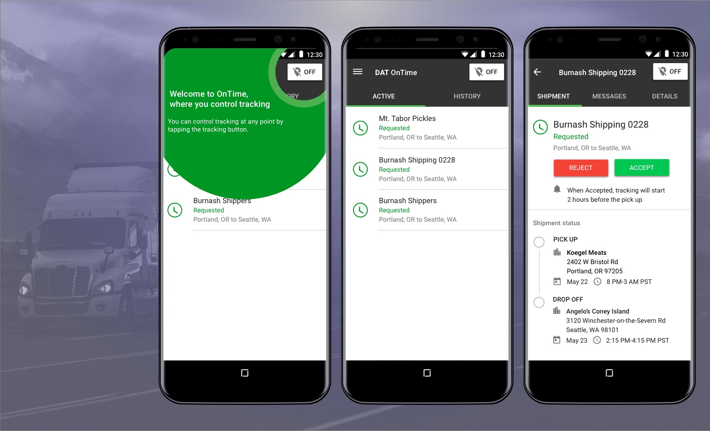
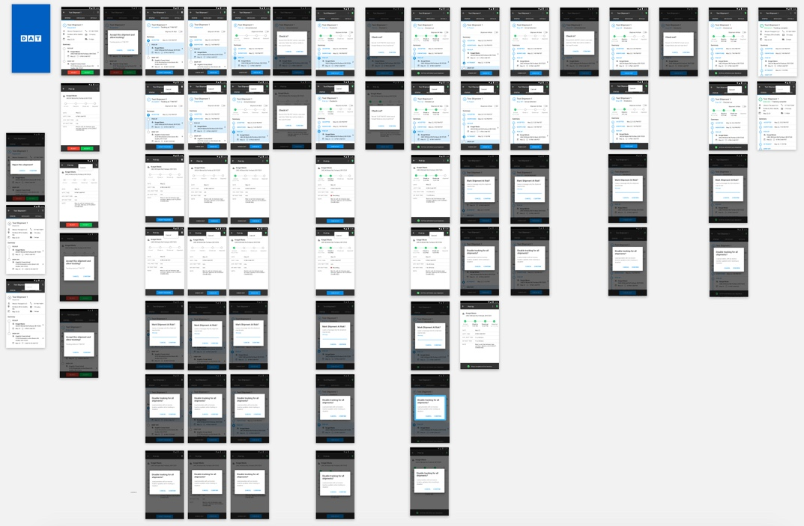
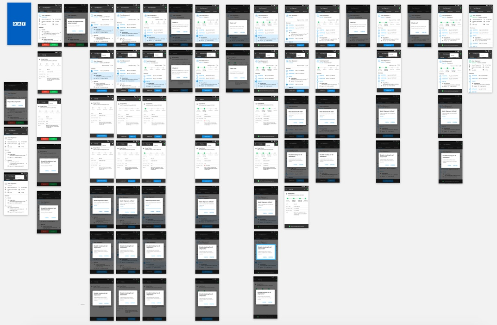

OnTime & Hot Market Maps
Building a consistent experience across new & legacy products
{kind=link}
Modernizing a 40+ year old company
DAT Solutions operates the largest freight marketplace — also known as "load boards" — in the United States. Load boards help truck drivers, brokers, and shippers keep the roads loaded with freight. Think of a load board as a "Craigslist for truckers", a place where brokers and shippers list their freight and truckers (typically owner-operators) post their availability.
I was one of three visual designers at DAT who was assigned the task of giving the entire product suite a visual and UX overhaul using Google's Material Design as a starting point. It felt like a herculean task, some of the products hadn't been updated in over a decade. The first products I took on were OnTime and Hot Market Maps.
OnTime — a real-time freight tracking platform
What is it?
OnTime is an app that allows Brokers to track the Drivers who are carrying their expensive freight. It uses phone GPS to capture a Driver's location and provide real time updates about the location of their freight.

OnTime sets itself apart from its competitiors with in-app messaging to reduce the number of check calls and allowing users to turn off tracking at any point (and provide a reason why!), to give them control of their privacy when they are off duty.
 

{kind=link}
Hot Market Maps

What is it?
Hot Market Maps is a tool that allows users to see the load-to-truck ration of within the continental US and Canada. I was one of the three designs who gave Hot Market Maps its first design refresh in 9 years. Version 2 of Hot Market Maps allows for further granularity and insights of load-to-truck ratios.
Project dates
- 2017-2019
My contributions
- Wireframing
- User interface Design
- Material Design
- User flows
- Sketch
- InVision prototyping
- Abstract
- Overflow
- Ideation sessions
- Usability testing
- User interviews
- Survey design